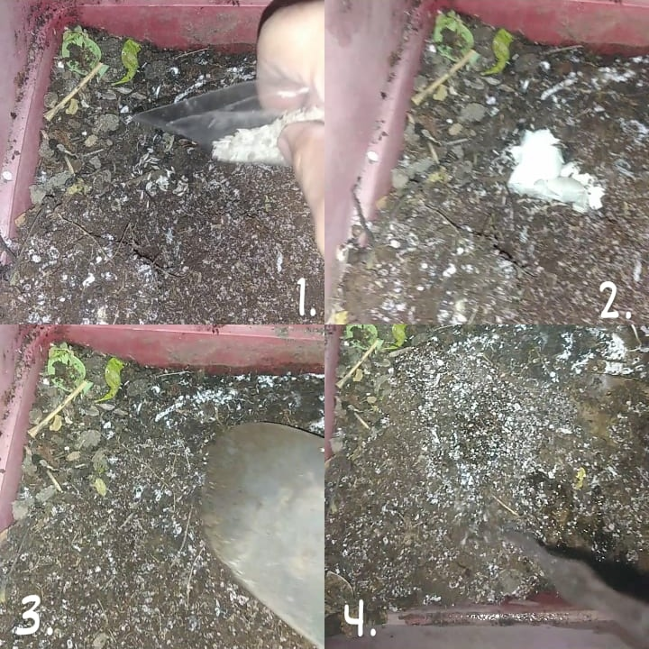

Science Invenstigation Project
BACKGROUND AND SIGNIFICANCE OF THE STUDY:
What is the value of composting to communities and the environment?
Composting waste food and other organic materials considerably lowers methane emissions. The need of chemical fertilizers is decreased, and in some cases completely eliminated, using compost. Higher yields of agricultural crops are encouraged by compost. Additionally, it improves soil, aiding in moisture retention and controlling pests and plant diseases. minimizes the requirement for chemical fertilizers. encourages the growth of helpful bacteria and fungus that break down organic debris to produce humus, an abundantly nutrient-rich substance.
How can the specific community or institution your PT group is engaged with, make use or benefit from composting in general, and from your group’s composting project specifically?
These composting projects will benefit the partner institution in addressing difficulties in their community like floods brought on by the Davao River. In the project we're working on as a group, we're feeding plants with eggshells. They really benefit from planting with composted food waste and other organic materials as fertilizer since it helps keep the flood rate in their region from rising.
STATEMENT OF THE PROBLEM:
What is the effect of eggshells on the plant ( lettuce? )
HYPOTHESIS:
If eggshells are used on the plant, then it will help the plants enhance tensile strength and elongation at break and moisture resistance properties. Moreover, it showed excellent biodegradation ability and promoted plant growth.
REVIEW OF RELATED LITERATURE:

We believe that eggshells will help our plant (lettuce) to grow healthier or bigger because some research says that eggshell, is made from crushed eggshells, which are high in calcium carbonate, a crucial mineral for strengthening plants’ cell walls. The shells also contain other minerals that help plants grow, including potassium, phosphorus, and magnesium. Eggshells are, therefore, an effective and inexpensive fertilizer for outdoor garden soil and houseplants. Eggshells lower soil acidity. Many types of plants prefer low acidity in the soil to absorb nutrients and ward off toxic elements like aluminum. The calcium carbonate in eggshells lowers soil pH levels, making the soil more alkaline than acidic. Eggshells discourage blossom-end rot. Certain plants, like tomato plants, will develop black spots on the ends of their fruit due to calcium deficiency. Adding calcium from eggshell fertilizer can help fruiting plants thrive and avoid blossom-end rot.